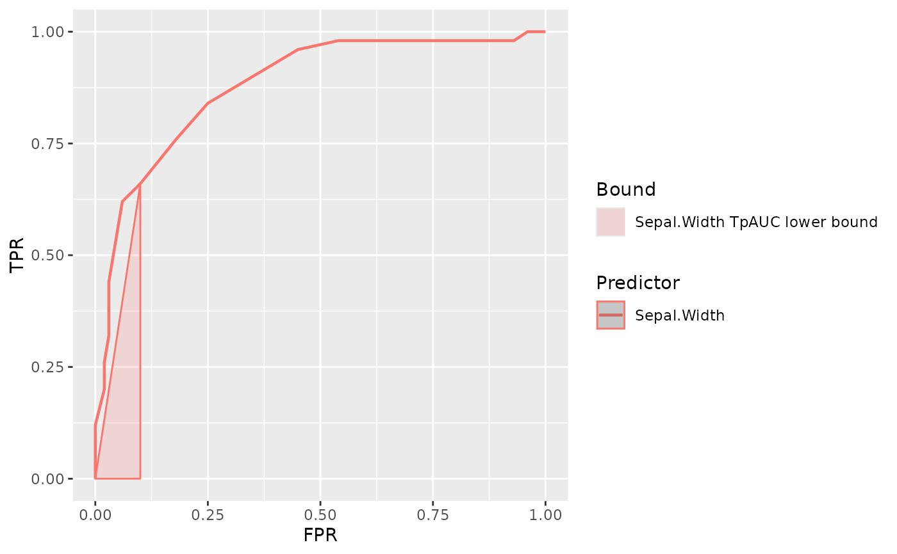

Add tpauc lower bound to a ROC plot
tpauc_lower_bounds.RdCalculate and plot lower bound defined by TpAUC specificity index.
add_tpauc_lower_bound() provides a upper level function which automatically
calculates curve shape in selected region and plots a lower bound that
ajust to it.
To enforce specific bounds followeing lower level functions are provided:
add_tpauc_concave_lower_bound. Plot lower bound corresponding to a ROC curve with concave shape selected region.add_tpauc_partially_proper_lower_bound. Plot lower bound corresponding to a ROC curve with partially proper (presence of some hook) in selected region.add_tpauc_under_chance_lower_bound. Plot lower bound corresponding to a ROC curve with a hook under chance line in selected region.
Usage
add_tpauc_concave_lower_bound(
data = NULL,
fpr = NULL,
tpr = NULL,
response = NULL,
predictor = NULL,
lower_threshold,
upper_threshold
)
add_tpauc_partially_proper_lower_bound(
data = NULL,
fpr = NULL,
tpr = NULL,
response = NULL,
predictor = NULL,
lower_threshold,
upper_threshold
)
add_tpauc_under_chance_lower_bound(
data = NULL,
fpr = NULL,
tpr = NULL,
response = NULL,
predictor = NULL,
lower_threshold,
upper_threshold
)
add_tpauc_lower_bound(
data = NULL,
fpr = NULL,
tpr = NULL,
response = NULL,
predictor = NULL,
lower_threshold,
upper_threshold
)Arguments
- data
A data.frame or extension (e.g. a tibble) containing values for predictors and response variables.
- fpr, tpr
Numeric vectors representing FPR and TPR for the classifier. These arguments will be used when no data, response and predictor are supplied.
- response
A data variable which must be a factor, integer or character vector representing the class to predict on each observation or Gold Standard. For more info on how to select class of interest see Methods below.
- predictor
A data variable wich must be numeric, representing values of a classifier or predictor for each observation.
- lower_threshold, upper_threshold
Two numbers between 0 and 1, representing lower and upper FPR for a region of interest.
Examples
plot_roc_curve(iris, response = Species, predictor = Sepal.Width) +
add_tpauc_lower_bound(
data = iris,
response = Species,
predictor = Sepal.Width,
upper_threshold = 0.1,
lower_threshold = 0
)
#> Warning: [*] Lower threshold already included in points ...
#> Warning: [*] Upper threshold already included in points ...
#> Warning: [*] Lower threshold already included in points ...
#> Warning: [*] Upper threshold already included in points ...
